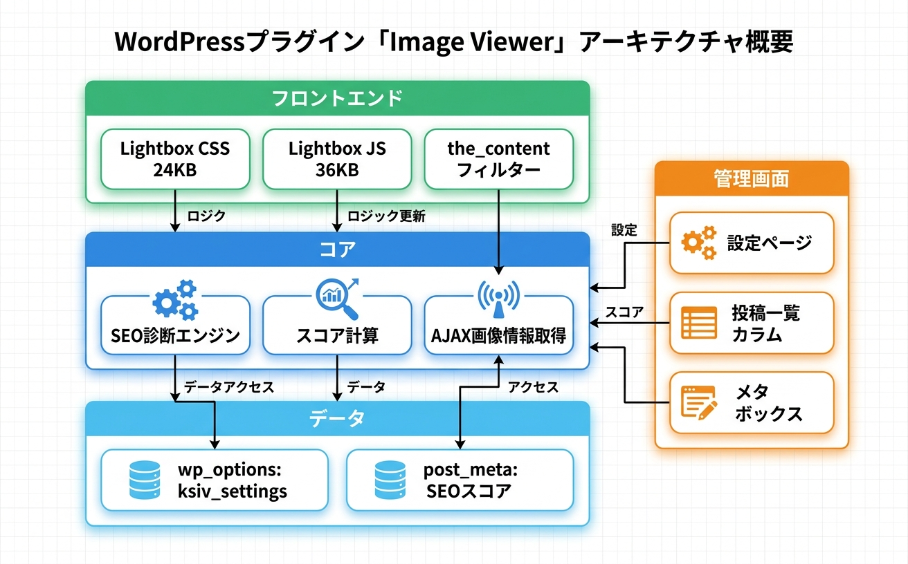

トラブルシューティング
よくある問題とその解決方法をまとめています。
よくある問題と解決策
Lightboxが表示されない
原因: JavaScriptの読み込み失敗、または他のプラグインとの競合が考えられます。
1
ブラウザのコンソール（F12キー）でJavaScriptエラーがないか確認する
2
他のLightbox系プラグインが有効になっていないか確認し、競合する場合は無効化する
3
テーマがjQueryに依存するLightboxを含んでいないか確認する
4
ブラウザのキャッシュをクリアして再読み込みする
フロントエンドにはCSS 24KB、JS 36KBが出力されます。キャッシュプラグインを使用している場合は、キャッシュを一度クリアしてください。
画像SEOスコアが表示されない
原因: 投稿に画像が含まれていないか、スコアの計算が完了していない可能性があります。
1
投稿内に画像が含まれていることを確認する
2
投稿を一度「更新」して保存し、スコアの再計算をトリガーする
3
投稿一覧画面をリロードしてスコアカラムを確認する
alt属性の診断結果が正しくない
原因: 画像がHTMLコンテンツ外（カスタムフィールド等）に埋め込まれている可能性があります。
1
投稿の本文（post_content）に画像が含まれているか確認する
2
ブロックエディターで画像ブロックのalt属性フィールドに適切なテキストを入力する
診断対象は投稿本文内の <img> タグのみです。ウィジェットやテーマテンプレートで直接挿入された画像は診断対象外です。
WebP/AVIF検出が動作しない
原因: 画像URLの拡張子が標準的でない場合、フォーマット検出が正しく動作しないことがあります。
1
画像URLに適切な拡張子（.webp、.avif）が含まれているか確認する
2
CDN等でURLが書き換えられている場合、元の拡張子が保持されているか確認する
動作要件
| 項目 | 要件 |
|---|---|
| WordPress | 6.0 以上 |
| PHP | 7.4 以上 |
| ブラウザ | Chrome, Firefox, Safari, Edge（最新版） |
| 権限 | 管理者（設定変更）、閲覧者（Lightbox利用） |
技術仕様
- データ保存: wp_options (
ksiv_settings), post_meta (SEOスコア) - カスタムテーブル: なし
- 外部通信: なし
- Cron: なし
- メール: なし
- AJAXハンドラー: 1個
- フロントエンド出力: CSS 24KB、JS 36KB
- セキュリティ: nonce検証、capability チェック
